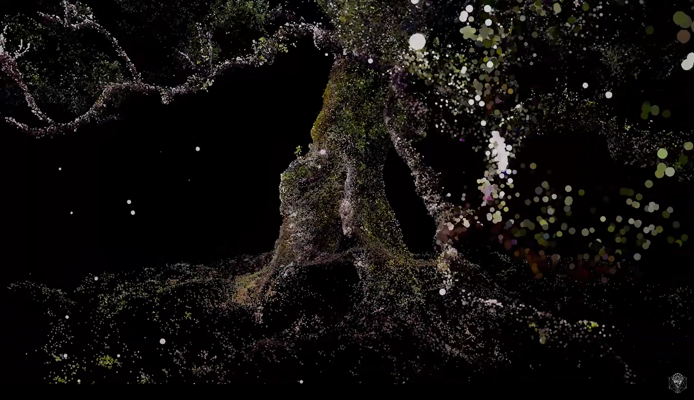
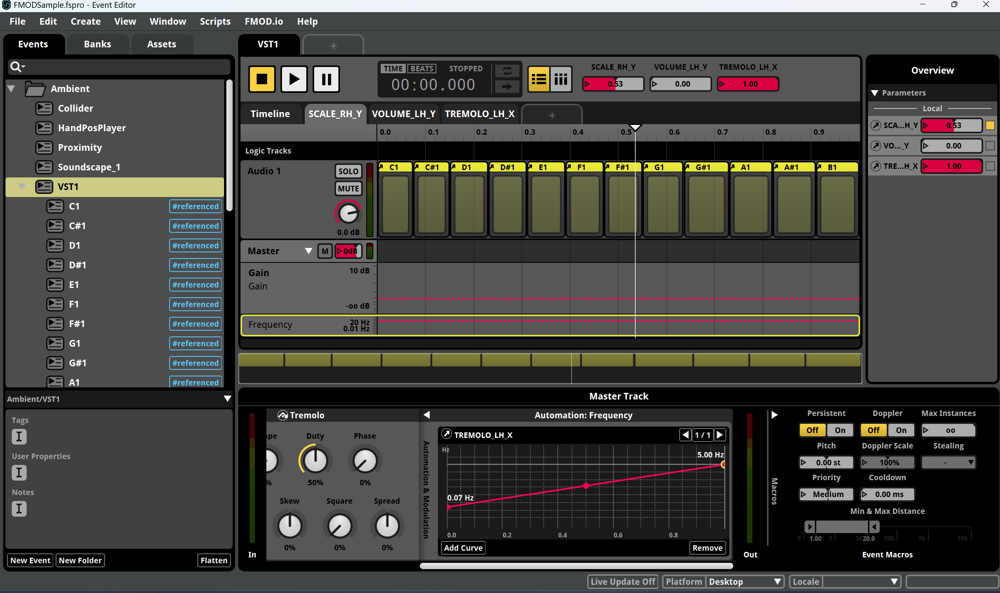

Video Documentation
Sinfonia Biotica VR Experience
Sinfonia Biotica is an immersive VR audiovisual experience that translates the bioelectrical activity and environmental behavior of trees, fungi, and other living organisms into a three-dimensional sonic and visual ecosystem. Situated between sound art, ecological research, and interactive technology, the project explores nature as a dynamic and living composition shaped by relationships, coexistence, and emergent behaviors.
The project combines applied research, sound design, and technological development through the use of biodata sensing devices, environmental and electrical signal monitoring, and a custom-built infrastructure for real-time data collection, storage, and visualization, including a dedicated database, API, and open-data platform. Alongside the VR experience, complementary devices and installations — including the so-called forest sentinels — were developed to make biological signals perceptible to the public within a specific ecological context.
Developed in Unreal Engine 5 and FMOD, the experience integrates spatial sound, generative systems, and interactive audiovisual environments to create an expanded form of listening that blurs the boundaries between biological activity, virtual space, and musical experience. The project also involved ecosystem scanning and environmental post-production processes to reconstruct immersive digital landscapes informed by real ecological data and field recordings.
The sound design and musical language of the project were created using a hybrid workflow involving FMOD, SuperCollider, modular synthesis, generative audio systems, and electroacoustic composition techniques. These tools were used to develop evolving sonic structures capable of responding dynamically to biological and environmental data in real time.
Within the project, I led the sound design and music team alongside Laura Zapata and Pedro Faguela, overseeing the development of the project's sonic identity, interactive audio systems, compositional approach, and integration between biodata-driven processes and immersive audiovisual interaction.



